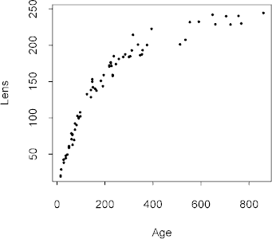
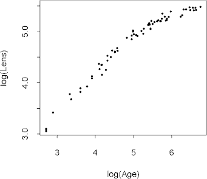
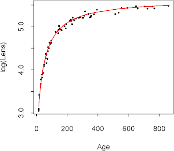
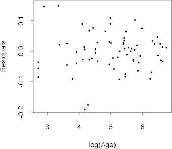

| / Home |
Keywords: nonlinear regression, log-normal distribution, gamma distribution, inverse-Gaussian distribution
The European rabbit Oryctolagus cuniculus is a major pest in Australia. A reliable method of age determination for rabbits caught in the wild would be of importance in ecological studies. In this study, the dry weight of the eye lens was measured for 71 free-living wild rabbits of known age. Eye lens weight tends to vary much less with environmental conditions than does total body weight, and therefore may be a much better indicator of age
The rabbits were born and lived free in an experimental 1.7 acre enclosure at Gungahlin, ACT. The birth data and history of each individual were accurately known. Rabbits in the enclosure depended on the natural food supply. In this experiment, 18 of the eye lenses were collected from rabbits that died in the course of the study from various causes such as coccidiosis, bird predation or starvation. The remaining 53 rabbits were deliberately killed, immediately after being caught in the enclosure or after they had been kept for some time in cages. The lenses were preserved and their dry weight determined.
| Variable | Description | ||
| Age | Age of rabbit in days | ||
| Lens | Dry weight of eye lens in milligrams | ||
Data file (tab-delimited text)
| Dudzinski, M. L., and Mykytowycz, R. (1961). The eye lens as an indicator of age in the wild rabbit in Australia. CSIRO Wildlife Research, 6, 156-159. |
| Ratkowsky, D. A. (1983). Nonlinear Regression Modelling. Marcel Dekker, New York. |
| Wei, B.-C. (1998). Exponential Family Nonlinear Models. Springer, Singapore. Examples 2.4 and 6.8 |
Dudzinski and Mykytowycz (1961) concluded the eye lens weight is a reliable indicator of the rabbit's age up to about 150 days. The deterministic component of their model is
Lens = a exp{ -b / (Age + g) }
Since the variance of Lens increases with Age, it may be appropriate to fit the nonlinear model
log(Lens) = a - b / (Age + g)
|  |  |
The fit of the suggested nonlinear regression by least squares appears good.
|  |  |
The data could just as well be treated as gamma rather than log-normal. Wei (1998) treats log(Lens) as inverse-Gaussian, but this seems unmotivated and produces a strong decreasing trend in the variance.
|
Home - About Us -
Contact Us Copyright © Gordon Smyth |